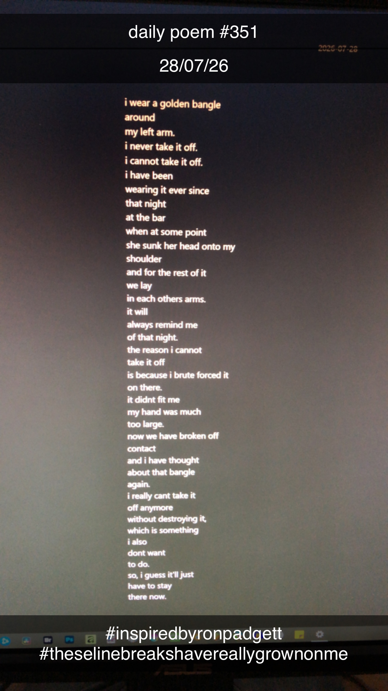

My Golden Bangle
I wear a golden bangle
around
my left arm.
I never take it off.
I cannot take it off.
I have been
wearing it ever since
that night
at the bar
when at some point
she sunk her head onto my
shoulder
and for the rest of it
we lay
in each other's arms.
It will
always remind me
of that night.
The reason I cannot
take it off
is because I brute forced it
on there.
It didn't fit me.
My hand was much
too large.
Now we have broken off
contact
and I have thought
about that bangle
again.
I really can't take it
off anymore
without destroying it,
which is something
I also
don't want
to do.
So, I guess it'll just
have to stay
there now.
